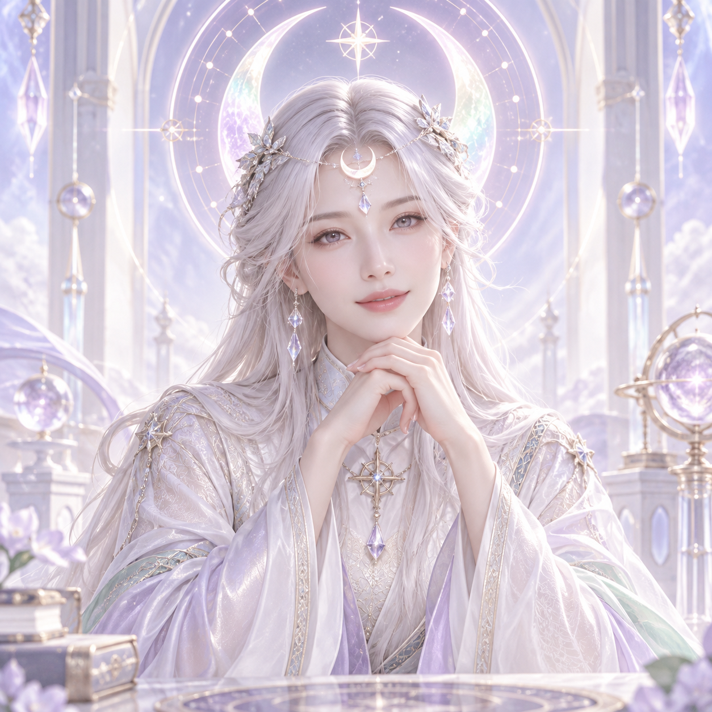

마음이 복잡할 때,
연애온도 78℃
사랑의 여신들과 썸·짝사랑·재회·이별의 궁금증을 풀어보세요.
회원가입 후 시크릿 여신 상담과 타로·점성술, 나의 연애스타일과 맞는 인연의 채팅·가상데이트를 시작해요.
“답을 서두르지 않아도 괜찮아.
지금 네 마음부터 함께 들어볼게.”
상담으로 마음을 듣고, 인연으로 이어가요.
나의 마음과, 나에게 맞는 관계
나와 온도가 맞는 사람
테스트한 회원의 연애스타일을 비교해 추천해요. 확인이 끝난 항목만 인증 상태로 표시합니다.
78℃를 넘어야만 만날 수 있는 건 아니에요. 서로 편안한 연애스타일을 찾아봐요.
인연을 알아가요.
먼저, 우리다운 가상데이트.
나에게 맞는 사람과 일상을 함께 경험해봐요. 나와 닮은 캐릭터를 고르고, 서로 동의한 장소와 활동부터 시작합니다.
내 캐릭터와 함께 시작하기
강아지와 산책, 카페, 캠핑, 취미, 가보고 싶은 나라와 지역. 상황 속에서 서로의 표현과 선택을 알아가요.
함께 고르고, 함께 경험해요.
같은 취미보다 중요한 건 서로의 선택을 존중하며 조율하는 방식이에요.
두 사람의 데이트 약속
활동과 여행지를 바꾸면 다시 동의를 확인해요. 서로의 선택이 다르면 합의를 먼저 이야기해봐요.
가상데이트를 마친 뒤 실제 만남은 별도 선택입니다. 만나지 않고 상담이나 가상데이트만 이어가도 괜찮아요.
별자리·타로는 보조 상담이며 연애스타일 분석과 매칭 점수에 반영하지 않아요.이제 실제로 만나볼까요?
가상데이트 후 두 사람이 별도로 동의한 경우에만 만남을 계획합니다.
시크릿 여신에게,
네 마음을 이야기해줘.
루미 · 타로 여신 상담재회를 고민하는 마음, 썸의 애매함, 새로운 인연에 대한 궁금증. 지금의 상황과 반복되는 패턴을 알려주시면 그 질문을 중심으로 함께 풀어갑니다.
지금 어떤 관계인가요?
별자리 상징을 질문과 연결하는 상담입니다. 출생 차트 계산은 포함하지 않습니다.
마음이 가는 카드를 세 장 골라주세요.
0 / 3장 선택
22종의 메이저 카드 중 중복 없이 3장을 선택합니다. 카드를 다시 섞어도 작성한 질문과 패턴은 유지됩니다.내 질문에 대한 풀이
시크릿 여신과 마음 나누기
풀이를 보며 떠오른 마음이나, 다음에 어떻게 말하면 좋을지 이야기해주세요. 주제·패턴·키워드에 따른 기본 상담이며 자동 심층 분석은 아닙니다.
나의 온도, 나의 인연.
나에게 맞는 인연을 시작해요.
회원가입 후 연애상담과 연애스타일 테스트, 채팅을 이용해요. 상담과 가상데이트로 나에게 편안한 관계를 알아가요.
휴대폰 홈 화면에 연애온도.
앱스토어 없이 웹앱으로 사용할 수 있어요. 회원가입 후 같은 계정으로 로그인하면 됩니다.
안드로이드 · Chrome
HTTPS 사이트를 연 뒤 메뉴에서 ‘앱 설치’ 또는 ‘홈 화면에 추가’를 선택하세요.
아이폰 · Safari
HTTPS 사이트를 연 뒤 공유 메뉴에서 ‘홈 화면에 추가’를 선택하세요.
현재 컴퓨터의 127.0.0.1 주소는 휴대폰에서 열 수 없습니다. 승인된 HTTPS 주소로 배포한 뒤 휴대폰 설치를 확인해야 합니다.
같은 공간에서,
우리의 선택을 나눠요.
장소를 함께 고르고, 그 안에서 대화하며 서로의 일상을 알아가요.
“정답은 없어. 서로 좋아하는 것과 편안한 방법을 같이 찾아보자.”
우리의 연애채팅
매칭 상대와 초대 코드를 나눠 참여하세요. 각자 로그인한 회원 두 명만 입장할 수 있어요.
어디서 무엇을 함께 해볼까?
서로 원하는 장소와 활동을 이야기하고 같은 계획에 동의해주세요.
상대가 도착하면, 가고 싶은 곳부터 이야기해보자.
전화 심층상담
서비스 준비 중
서비스 연결을 준비하고 있어요. 연락 가능한 번호와 원하는 시간을 남기면 연결 신청을 접수합니다.
요청은 일정 확인 대기 상태로 접수됩니다. 상담가의 개인 번호는 공개하지 않습니다.
“말이 정리되지 않아도 괜찮아.
네 속도에 맞춰 함께 들어볼게.”